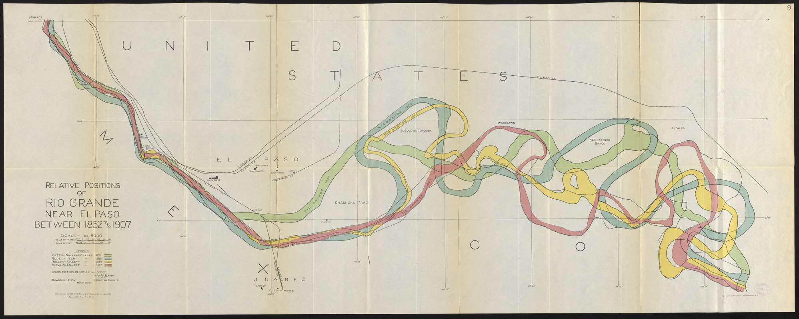
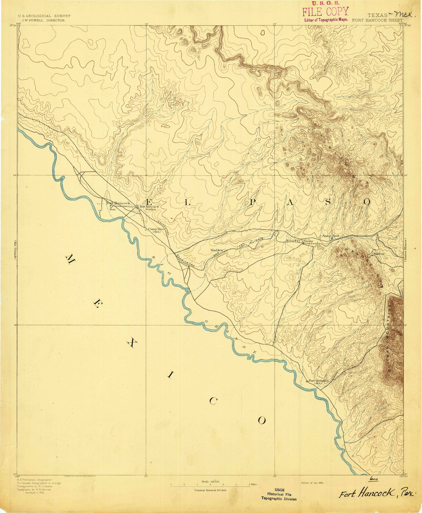
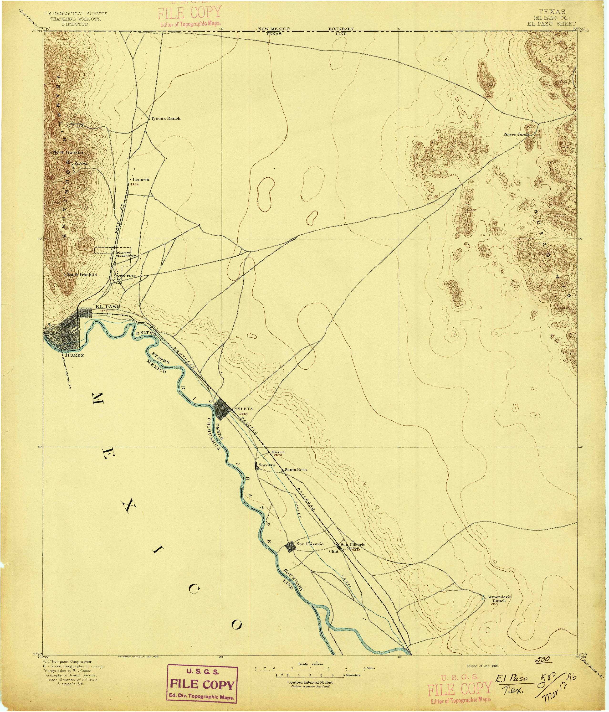
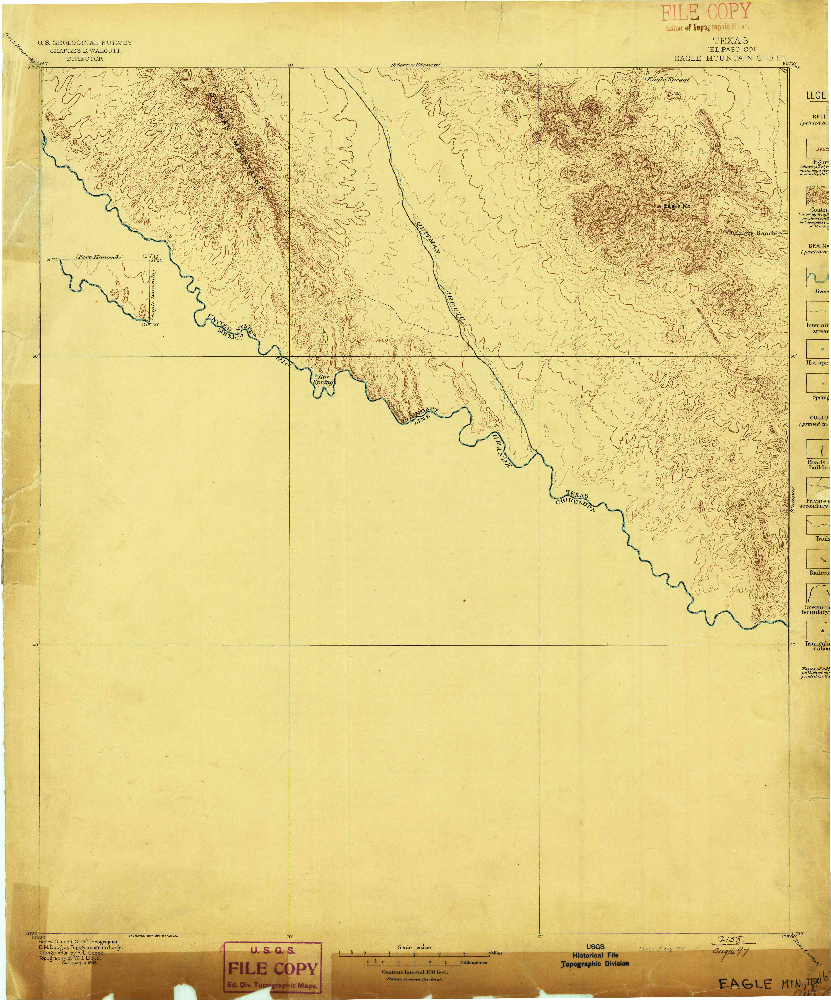
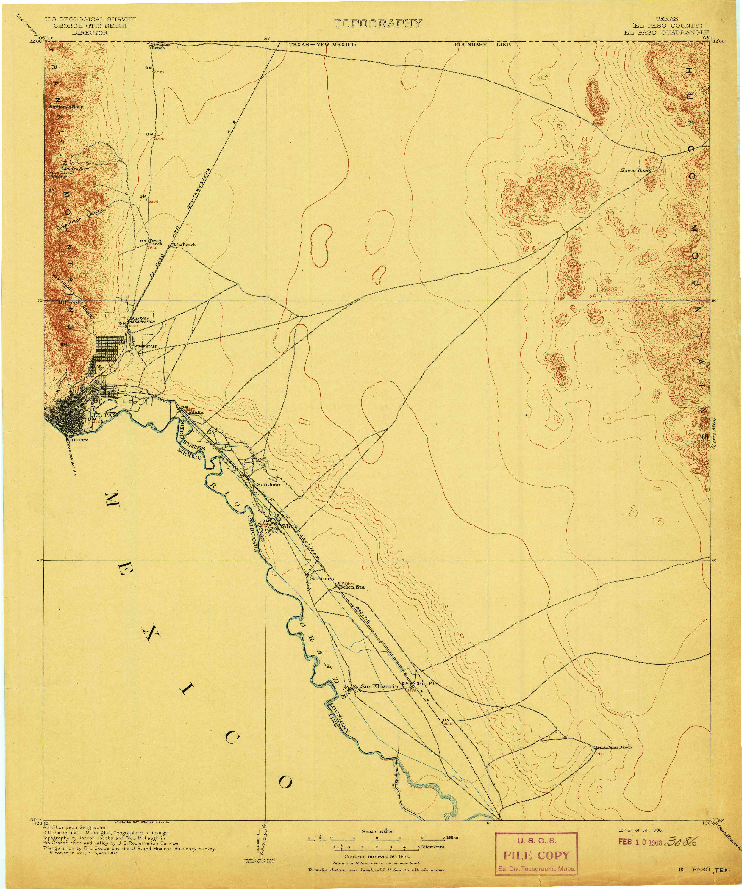
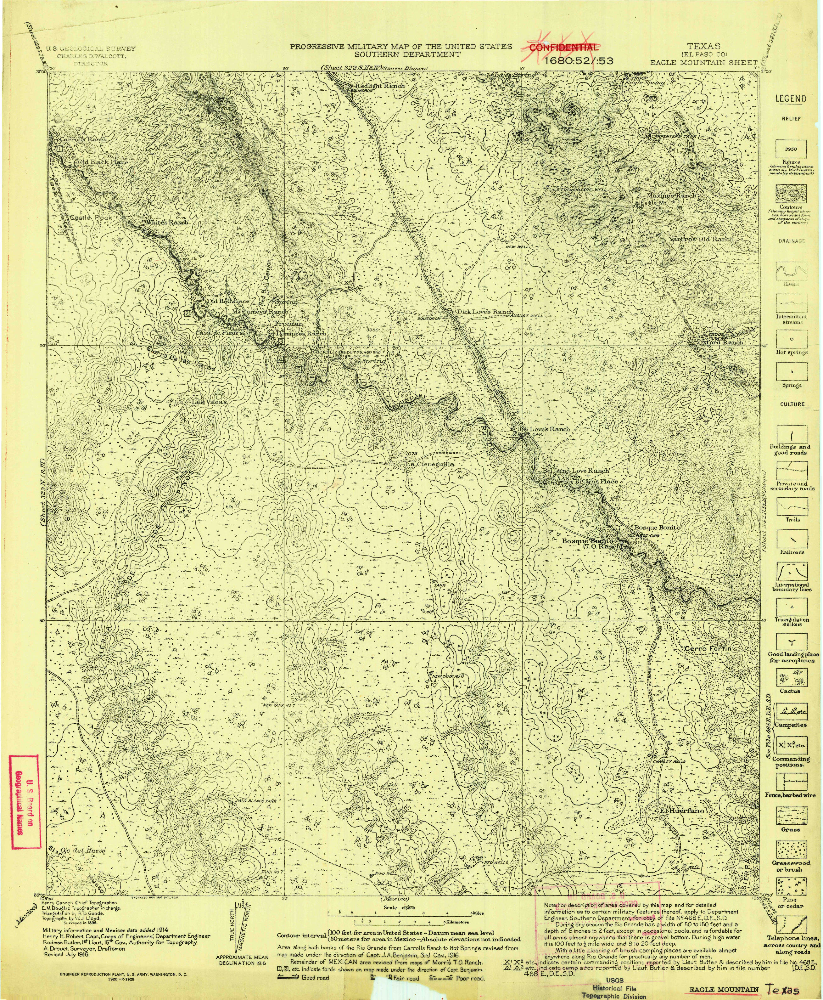
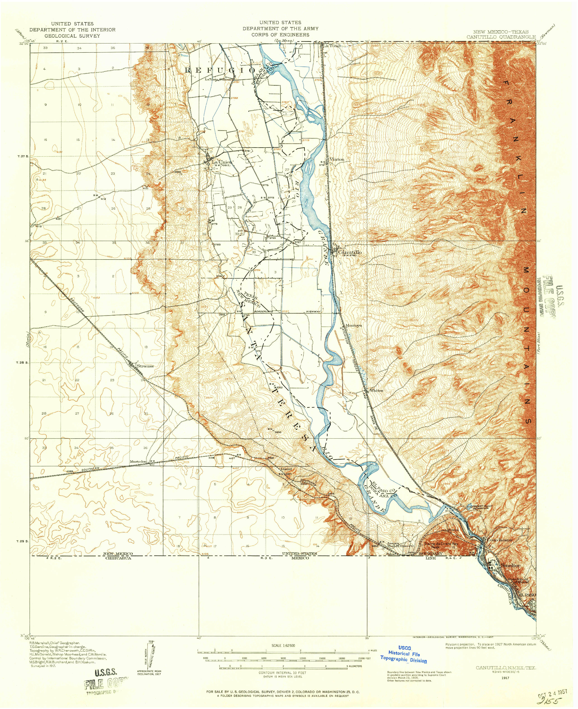
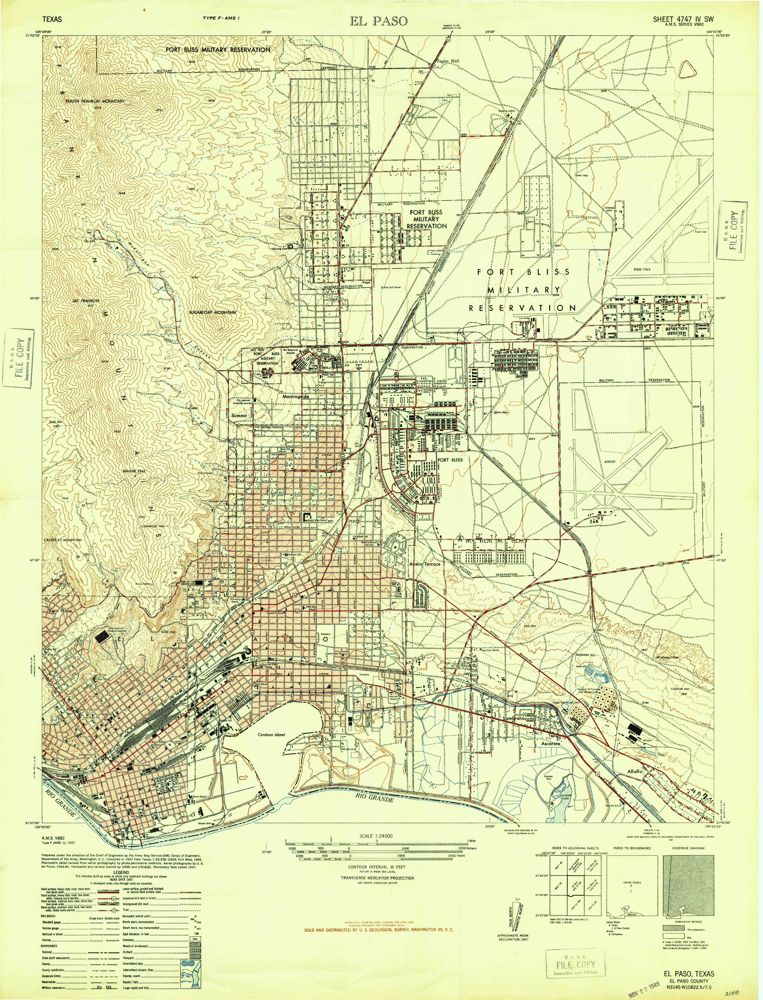
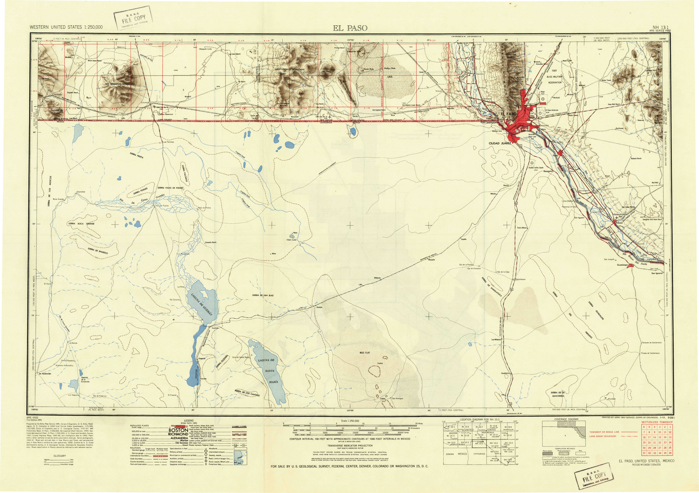
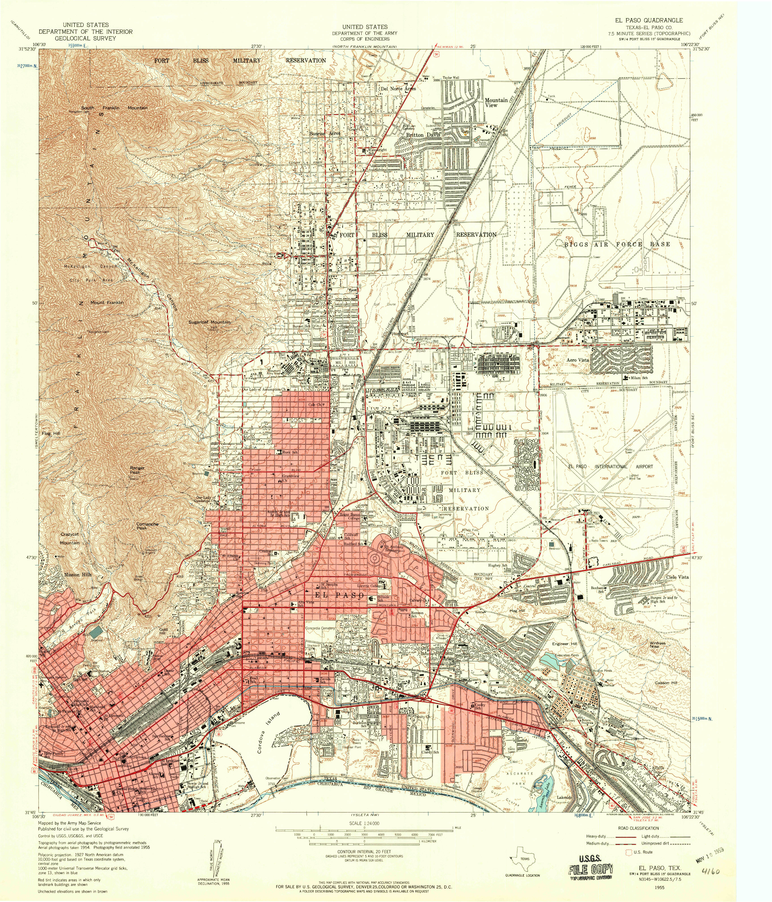

| FILE NAME | YEAR/DATE | AREA | SOURCE/URL | TRACED BY | RIVER TRACING FILE | |
|---|---|---|---|---|---|---|
|  | Relative positions of Rio Grande near El Paso between 1852 and 1907 | 1852 1889 1899 1907 |
1 | IBC | Patrick O'Shea | (geojson):1852 (geojson):1889 (geojson):1899 (geojson):1907 |
|  | TX_Fort Hancock_123977_1894_125000_geo | 1894 | 1 | USGS | Chris Taylor | GEOJSON |
|  | TX_El Paso_123946_1896_125000_geo.tif | 1896 | 1 | USGS | Daniel Rios | |
|  | TX_Eagle Mountain_123925_1897_125000_geo | 1897 | 1 | USGS | Alex | |
|  | TX_El Paso_123948_1908_125000_geo | 1908 | 1 | USGS | andres Armendariz | GEOJSON |
|  | TX_Eagle Mountain_123927_1916_125000_geo | 1916 | 1 | USGS | Chris Taylor | GEOJSON |
|  | NM_Canutillo_189980_62500 | 1917 | 1 | USGS | Daniel | |
| TX_Ysleta_117325_1939_62500_geo | 1939 | 1 | USGS | Daniel Rios | GEOJSON | |
| TX_Clint_108727_1941_62500_geo | 1941 | 1 | USGS | Chris Taylor | GEOJSON | |
 |
TX_El Paso_107852_1941_31680_geo | 1941 | 1 | USGS | Adrian | |
| TX_Tornillo_116675_1941_62500_geo | 1941 | 1 | USGS | Amber Noyola | ||
| TX_Ysleta_117326_1941_62500_geo | 1941 | 1 | USGS | Caitlin Ford | ||
| TX_Fort Hancock_108227_1943_62500_geo | 1943 | 1 | USGS | Andres Armendariz | ||
| TX_Fort Quitman_108241_1943_62500_geo | 1943 | 1 | USGS | Amber Noyola | ||
| TX_McNary_109668_1943_62500_geo | 1943 | 1 | USGS | Amber Noyola | ||
| TX_Ysleta_117327_1945_62500_geo | 1945 | 1 | USGS | Caitlin Ford | ||
|  | TX_El Paso_107853_1948_24000_geo | 1948 | 1 | USGS | Maria | |
|  | TX_El Paso_107860_1953_250000_geo | 1953 | 1 | USGS | Daniel Rios | GEOJSON |
| TX_Van Horn_116854_1954_250000_geo | 1954 | 1 | USGS | Daniel Rios | ||
| TX_Clint_108729_1955_24000_geo | 1955 | 1 | USGS | aa | ||
|  | TX_El Paso_107857_1955_24000_geo | 1955 | 1 | USGS | Maria | |
| TX_San Elizario_111331_1955_24000_geo | 1955 | 1 | USGS | aa | ||
| TX_Smeltertown_121447_1955_24000_geo.tif | 1955 | 1 | USGS | Daniel Rios | ||
| TX_Ysleta_117330_1955_24000_geo | 1955 | 1 | USGS | Daniel Rios | ||
| TX_El Paso_107863_1959_250000_geo | 1959 | 1 | USGS | andres Armendariz | ||
| TX_El Paso_107859_1964_250000_geo | 1964 | 1 | USGS | Landon Wade | ||
| TX_El Paso_107862_1965_250000_geo | 1965 | 1 | USGS | Daniel Rios | ||
| TX_Acala_106119_1972_24000_geo | 1972 | 1 | USGS | Daniel Rios | GEOJSON | |
| TX_Esperanza_107975_1972_24000_geo | 1972 | 1 | USGS | Daniel | ||
| TX_Fort Hancock NW_108224_1972_24000_geo | 1972 | 1 | USGS | Joe Bondi | ||
| TX_Fort Hancock_108228_1972_24000_geo | 1972 | 1 | USGS | Joe Bondi | ||
| TX_Isla_111033_1972_24000_geo | 1972 | 1 | USGS | Maria | ||
| TX_McNary_109670_1972_24000_geo | 1972 | 1 | USGS | Maria | ||
| TX_Tornillo_116679_1972_24000_geo | 1972 | 1 | USGS | Maria | ||
| TX_El Paso_107864_1983_1000000_geo.tif | 1983 | 1 | USGS | Daniel Rios | GEOJSON | |
| TX_Indian Hot Springs_117893_1984_100000_geo | 1984 | 1 | USGS | Bryan Brummett | ||
| TX_Mount Livermore_118229_1985_100000_geo | 1985 | 1 | USGS | Amber Noyola | ||
| TX_Tornillo_123513_1985_100000_geo | 1985 | 1 | USGS | Alex | ||
| TX_Ysleta NW_123668_1990_24000_geo | 1990 | 1 | USGS | Stephanie Enriquez | - | |
| TX_El Paso_122302_1994_24000_geo | 1994 | 1 | USGS | Maria | ||
| TX_Ysleta NW_123669_1994_24000_geo | 1994 | 1 | USGS | Daniel Rios | ||
| TX_Smeltertown_124080_1996_24000_geo | 1996 | 1 | USGS | Daniel Rios |